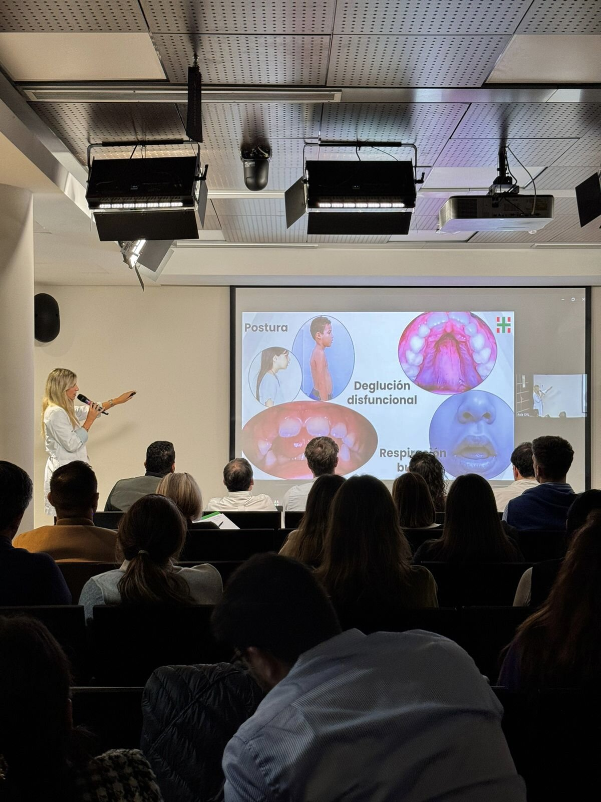
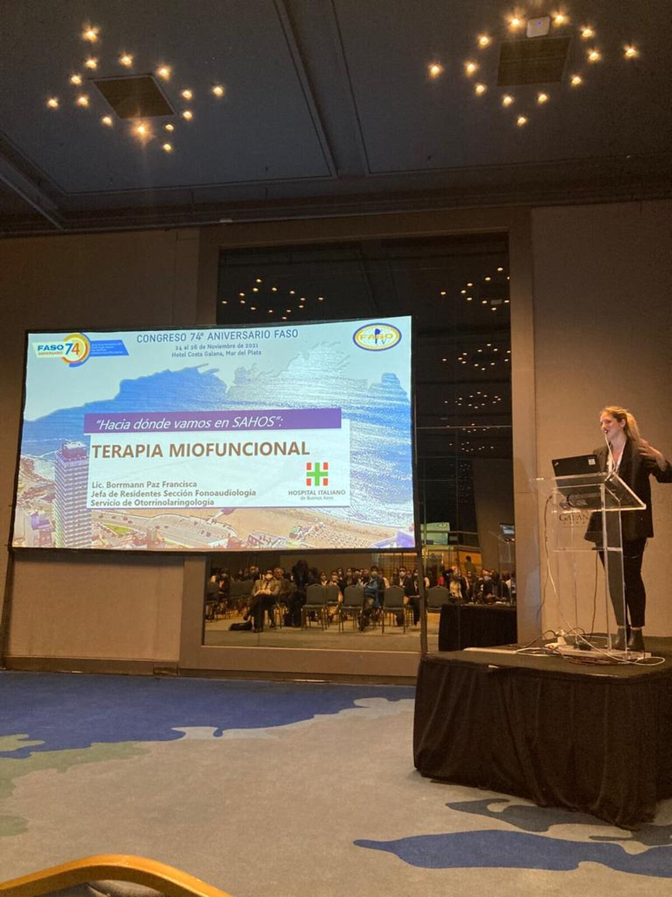
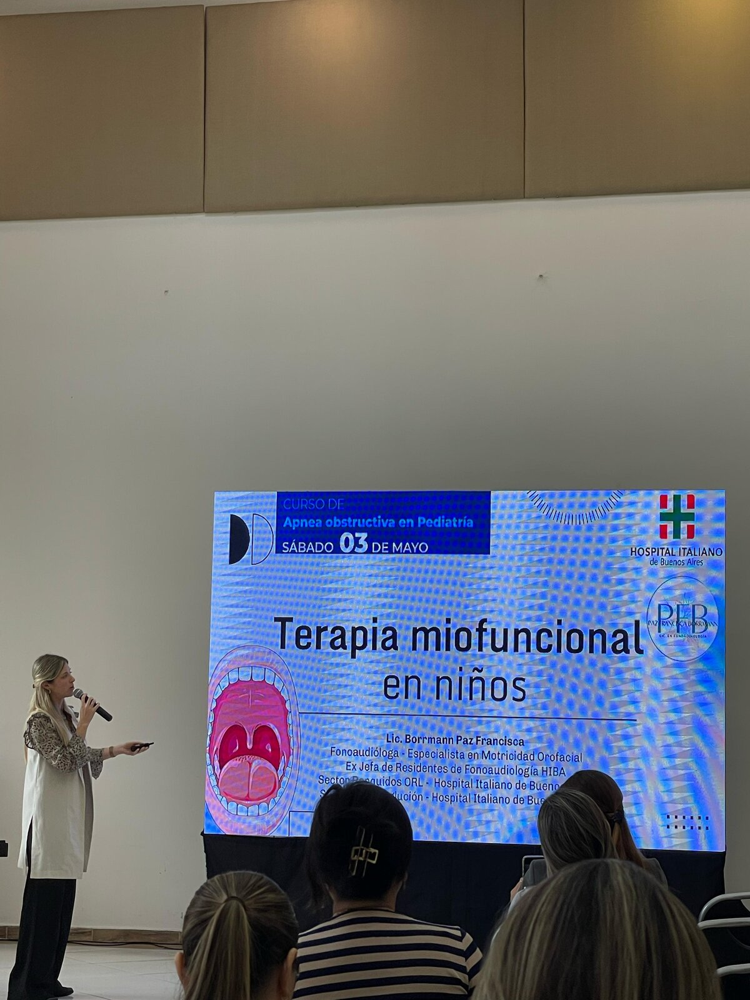
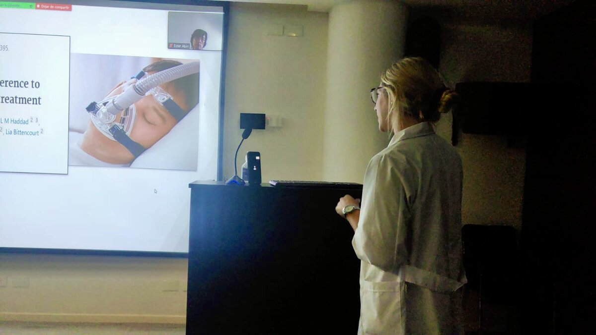
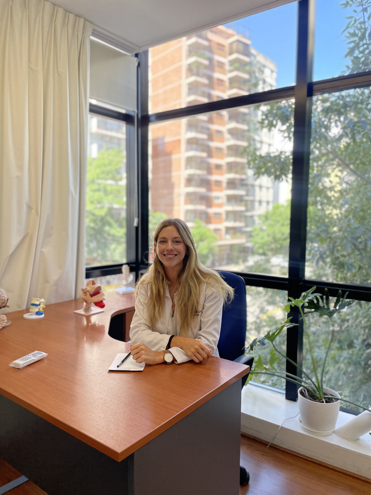

TOFAR: Terapia Orofaríngea para Apneas y Ronquidos. Tratamiento miofuncional especializado para trastornos del sueño y deglución.
Hospital Italiano
Buenos Aires
IES
Instituto del Sueño
España
Especialización




"La respiración nasal es la base de un sueño reparador y una vida saludable."
- Chequeado.com, 2025
Soy Francisca Borrmann, Licenciada en Fonoaudiología (Universidad del Salvador), especializada en Terapia Miofuncional para trastornos respiratorios del sueño, ronquidos y deglución. Nacida en la Patagonia Argentina, formada en Buenos Aires y con especialización internacional.
Licenciada en Fonoaudiología por la Universidad del Salvador. Realicé mi residencia y jefatura de residentes en el Hospital Italiano de Buenos Aires (4 años), donde descubrí la TOFAR (Terapia Orofaríngea para Apneas y Ronquidos).
Completé una rotación en España con el Dr. Carlos O'Connor, referente mundial en trastornos respiratorios del sueño, y una Diplomatura en Motricidad Orofacial (UDD, Chile). Actualmente trabajo en el Hospital Italiano (Subsección Deglución y Sector Ronquidos) y en el Instituto de Enfermedades del Sueño (IES).

Más de 50 años de experiencia institucional. Centro de referencia en Otorrinolaringología de Argentina.
Staff profesional desde abril 2025. Equipo interdisciplinario dedicado al abordaje integral de los trastornos del sueño.
Especialización en Terapia Miofuncional en España. Técnicas europeas de vanguardia aplicadas localmente.
Métodos revolucionarios personalizados para cada paciente. Sin tiempos fijos, porque cada persona es única y merece un enfoque individual.
Tratamiento miofuncional complementario para apnea del sueño. Fortalecimiento de músculos respiratorios mediante ejercicios especializados.
Tratamiento para reducir ronquidos mediante fortalecimiento muscular y técnicas de respiración nasal efectivas.
Rehabilitación de la deglución mediante fortalecimiento muscular dirigido y evaluación especializada para mejorar tu calidad de vida.
Terapia miofuncional accesible desde cualquier ubicación. Atención profesional personalizada para tu bienestar y recuperación.
Un proceso simple, claro y adaptado a vos.
Elegí el horario que te quede cómodo desde nuestra agenda online. La consulta es por videollamada, desde donde estés.
En la primera sesión evaluamos tu caso en detalle: respiración, deglución, musculatura orofacial y calidad del sueño.
Recibís un plan de ejercicios diseñado para tu caso. Te acompaño sesión a sesión, ajustando según tu evolución.
Historias reales de personas que mejoraron su calidad de sueño y de vida.
Pamela
Mamá de Malena, 6 años
"La experiencia con mi hija Malena fue excelente. Fran encontró muchísimas formas de acercarse a su personalidad introvertida. Empezamos de no querer casi hablar a finalizar el tratamiento sin querer irse. Profesional, respetuosa, amorosa y empática."
Dorys
Paciente — Ronquidos y apnea
"Mis ronquidos y apneas me provocaron un infarto de ojo. Hice ejercicios muy fáciles por unas semanas. Increíblemente en pocos días ya ronqué mucho menos y más suave. Las apneas disminuyeron, casi no las tengo. Estoy muy agradecida."
Pura
Paciente — Estudio de sueño
"Después de un estudio de sueño que no salió bien, realicé todos los ejercicios pedidos por la Lic. Francisca. El nuevo estudio de sueño salió perfecto. Sigo haciendo los ejercicios como terapia y sigo durmiendo muy bien."
Inés
Paciente — TOFAR
"Llegué derivada por la Dra. Sartori por ronquido y apnea. Realicé el tratamiento TOFAR con un trato amable, cálido y contenedor. El método resultó muy efectivo. Mi experiencia fue positiva, especialmente por el trato profesional de Francisca."
Cecilia
Paciente — Dificultades de sueño
"Me despertaba con sobresaltos y tenía el sueño interrumpido. AirwayGym cambió mi vida. Estuve 90 días haciendo los ejercicios y luego encontré una regularidad que me sirvió para mantener la higiene de mi sueño. Lo recomiendo."
Hilda
Paciente — TOFAR
"Con el primer ejercicio comenzó el cambio en mi vida. Cada ejercicio ayudó a restaurar la musculatura bucal y como resultado una mejor calidad de sueño. TOFAR no es una terapia más, es un salvavidas. Agradezco a la Lic. Borrmann y al Hospital Italiano."
Videos paso a paso para que practiques desde casa. Cada ejercicio diseñado específicamente para tu condición.
Fortalecimiento específico de músculos respiratorios
Ejercicios de lengua y posicionamiento nocturno
Rehabilitación paso a paso de la deglución
Técnicas avanzadas de respiración funcional
Cómo realizar tu autoevaluación correctamente
Cómo monitorear tu progreso semanalmente
Biblioteca completa de videos terapéuticos personalizados para cada condición. Material exclusivo para pacientes en tratamiento.
Solicitar InformaciónPublicaciones, participaciones en congresos y reconocimiento académico que respaldan la eficacia de nuestros métodos.
Congreso Otorrinolaringología
Ponencia invitada en el 74º Congreso de la Federación Argentina de Sociedades de Otorrinolaringología.
Consulta Experta
Experta consultada sobre "Mouth Taping" y respiración nasal para el medio de fact-checking más respetado de Argentina.
Rotación Internacional
Rotación con el Dr. Carlos O'Connor, referente mundial en trastornos respiratorios del sueño y terapia miofuncional.
Experiencia Clínica
Residencia y Jefatura de Residentes en Fonoaudiología. Subsección Deglución y Sector Ronquidos (ORL).
Medicina del Sueño
Staff profesional en el Instituto de Enfermedades del Sueño (IES) desde abril 2025. Abordaje integral de trastornos del sueño.
Universidad y Posgrado
Lic. en Fonoaudiología (Universidad del Salvador). Diplomatura en Motricidad Orofacial (UDD, Chile). Docente y disertante en congresos.
Acceso completo a documentación académica, certificaciones y publicaciones disponible para pacientes en tratamiento.
Solicitar DocumentosEl primer paso hacia un sueño reparador está a solo un mensaje de distancia. Agendá tu evaluación personalizada y descubrí el tratamiento adecuado para tu caso.
Hospital Italiano de Buenos Aires
Subsección Deglución · Sector Ronquidos
Evaluación completa en persona
Desde cualquier país
Misma calidad profesional
Tecnología de vanguardia
Sistema de citas online próximamente disponible. Mientras tanto, contáctame directamente para agendar tu evaluación:
WhatsApp DirectoRespuesta garantizada en menos de 24 horas
Terapia Miofuncional — Lic. Borrmann